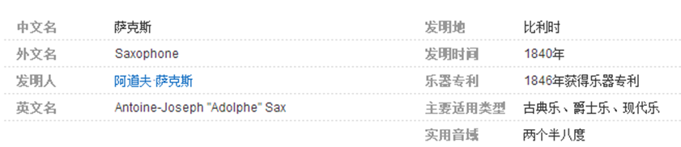

萨克斯是以发明者的名字命名的木管乐器，音色介于木管乐器和铜管乐器之间。生活在十九世纪的阿道夫•萨克斯（1814－1894）是比利时著名的乐器生产者和发明家。
萨克斯是由比利时人阿道夫•萨克斯（Antoine-Joseph Sax,1814-1894）于1840年发明的。阿道夫是一位锐意的乐器制造者，擅长黑管和长笛演奏。他最初的设想是为管弦乐队设计一种低音乐器，比奥菲克莱德号（Ophicleide）吹奏灵活并能适应室外演出。他将低音单簧管的吹嘴和奥菲克莱德号的管身结合在一起并加以改进，以自己名字命名了这种新型乐器。
更多>>每一种产品都有知名的品牌，萨克斯也不例外。经过多年的发展，萨克斯界已经出现了以下几大品牌：每一种产品都有知名的品牌，萨克斯也不例外。经过多年的发展，萨克斯界已经出现了以下几大品牌：